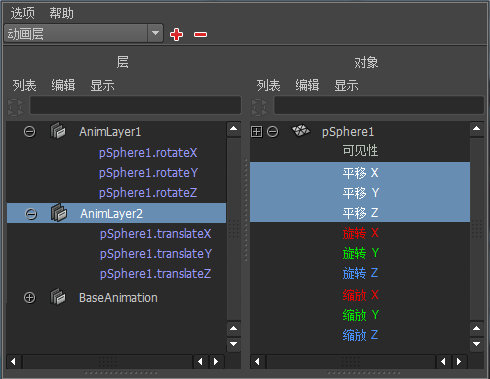

您可以将场景中任何对象的属性添加到动画层，也可以将其移除。可以将属性指定给多个层，但一次只能在一个层上设定关键帧。
默认情况下，创建层时会将选定对象的所有属性添加到该层。您可以使用“将对象添加到动画层选项”(Add Objects To Animation Layers Options)更改此默认设置。
设定默认情况下要添加到新层的属性
- 在“动画层编辑器”(Animation Layer Editor)中，选择“层 > 添加选定对象”(Layers > Add Selected Objects)
 。
。
此时将打开“将对象添加到动画层选项”(Add Objects To Animation Layers Options)。
- 选择无论何时选择对象并为其创建层都希望添加到新层的属性。
如果要添加或移除层上的各个属性，可以使用“关系编辑器”(Relationship Editor)或“通道盒”(Channel Box)。
使用通道盒将属性添加到层
- 在“动画层编辑器”(Animation Layer Editor)中，选择要向其添加属性的层。
- 选择要将其属性添加到层的对象，然后使用“通道盒”(Channel Box)选择要添加的特定属性。
- 在选定属性上单击鼠标右键，并从弹出菜单中选择“添加到选定层”(Add To Selected Layers)。
选定属性将添加到动画层，并且在“通道盒”(Channel Box)中这些属性的值字段将更改颜色以表明这些属性现在与层关联。
使用通道盒移除层中的属性
- 选择要移除其属性的对象，并选择要从中移除属性的层。
- 在“通道盒”(Channel Box)中，选择要从选定层移除的各个属性。
- 在“通道盒”(Channel Box)中的属性上单击鼠标右键，并从弹出菜单中选择“从选定层移除”(Remove From Selected Layers)。
选定属性会从选定层中移除。“通道盒”(Channel Box)中属性值字段的背景将更改颜色以表明该属性不再与层关联。
使用“关系编辑器”(Relationship Editor)添加或移除属性
- 选择要添加或移除其属性的对象。
- 在“动画层编辑器”(Animation Layer Editor)中，选择“层 > 成员身份”(Layers > Membership)。
此时将打开“关系编辑器”(Relationship Editor)，并在左侧面板和右侧面板中分别显示所有动画层和选定对象。
- 在左侧面板中，选择要处理的层。
提示：
您也可以展开层以确认为其指定的属性。
- 在右侧面板中，展开选定对象的显示以查看其所有属性。
此时将亮显已指定给选定层的所有属性。
 - 在右侧面板中执行以下操作可添加和移除属性：
- 若要将属性添加到层，请单击尚未指定给选定层的任意属性。
该属性已添加到层，且其名称已添加到左侧面板中的层名称下。在右侧面板中，将亮显该属性以指示它是选定层的成员。
- 若要从层中移除属性，请单击任何亮显的属性。
属性已从层中移除，使其不再显示在左侧面板中，且不再亮显在右侧面板中。
- 若要将属性添加到层，请单击尚未指定给选定层的任意属性。
“将对象添加到动画层选项”(Add Objects To Animation Layers Options)还可用于将属性组添加到选定层。
将对象的所有可设定关键帧的属性添加到动画层
- 选择要添加其属性的对象，并选择要将属性添加到的层。
- 在“动画层编辑器”(Animation Layer Editor)中，选择“层 > 添加选定对象”(Layers > Add Selected Objects) 。
此时将打开“将对象添加到动画层选项”(Add Objects To Animation Layers Options)对话框。
- 选择“所有可设置关键帧的属性”(All keyable attributes)。
- 单击“应用并关闭”(Apply and Close)。
可将对象的所有可设定关键帧的属性添加到选定层。
将选定类型的可设定关键帧属性添加到动画层
- 选择要添加其属性的对象，并选择要将属性添加到的层。
- 在“动画层编辑器”(Animation Layer Editor)中，选择“层 > 添加选定对象”(Layers > Add Selected Objects) 。
此时将打开“将对象添加到动画层选项”(Add Objects To Animation Layers Options)对话框。
- 选择“除以下项外全部可设置关键帧的属性”(All keyable except)以解除锁定属性类型列表。
- 选择要从层中排除的每种属性类型。
- 单击“应用并关闭”(Apply and Close)。
可将对象的所有可设定关键帧的属性添加到选定层，选定的属性类型除外。
从动画层中移除对象的所有属性
- 选择要移除其属性的对象，并选择要从中移除属性的层。
- 在层上单击鼠标右键，并从弹出菜单中选择“移除选定对象”(Remove Selected Objects)。
将从选定层中移除选定对象的所有属性。